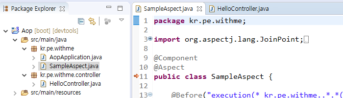
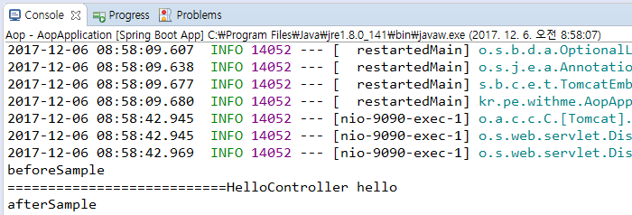

Aspect 설정

package kr.pe.withme;
import org.aspectj.lang.JoinPoint;
import org.aspectj.lang.annotation.After;
import org.aspectj.lang.annotation.Aspect;
import org.aspectj.lang.annotation.Before;
import org.springframework.stereotype.Component;
@Component
@Aspect
public class SampleAspect {
@Before("execution(* kr.pe.withme..*.*(..))")
public void beforeSample(JoinPoint jp) {
System.out.println("beforeSample");
}
@After("execution(* kr.pe.withme..*.*(..))")
public void afterSample(JoinPoint jp) {
System.out.println("afterSample");
}
}
package kr.pe.withme.controller;
import org.springframework.web.bind.annotation.RequestMapping;
import org.springframework.web.bind.annotation.RequestMethod;
import org.springframework.web.bind.annotation.RestController;
@RestController
public class HelloController {
@RequestMapping(value="/hello", method=RequestMethod.GET)
public String hello() throws Exception {
System.out.println("===========================HelloController hello");
return null;
}
}
